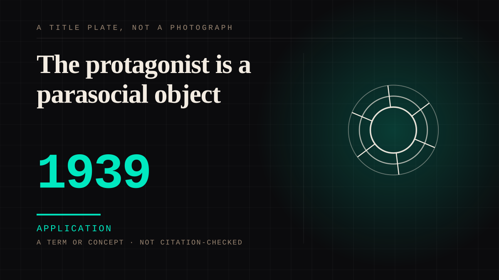

A term or concept · 1939 · Cinema
The protagonist is a parasocial object
The first-person film, the subjective shot, the character who exists to be looked through rather than at.

A technical innovation that produced a psychological one. Putting the camera inside somebody's eyes makes the audience's position structurally identical to the character's, which is the whole friendship with a film in one device.
Application. One-sided attachment put to work on purpose. Creator economies, community, fandom as infrastructure, and the things that genuinely help people. Not automatically good - a tool with an obvious use is a tool that will also get a bad one.
Same story, 6 other entries
Parasocial interaction1956 → Parasocial interaction disorder1985 → Parasocial persuasion2015 → The K-pop intimacy economy2016 → Consent in one-sided attachment2020 → A glimpse mistaken for access2026
Where it sits
1900 1900-1949 · 1939 1949
CHARACTER The written character
Connected · 3 out, 9 in
Reported as a story
It sits in